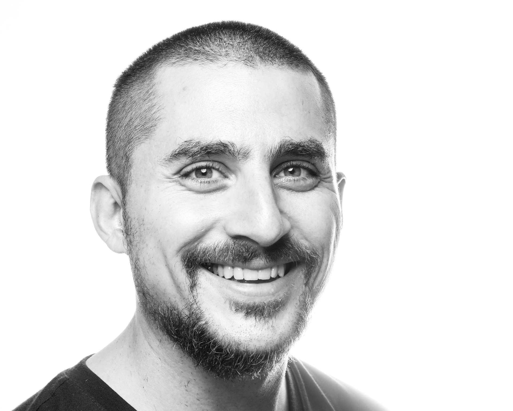

+ 1 (614) 440-7529
349C Sullivant Hall,
1813 North High Street,
Columbus, OH 43210
8th May 1988, Córdoba, Argentina
Postdoctoral Scholar in Immersive Audio, The Ohio State University. Global Arts and Humanities Discovery Theme, School of Music, Advanced Computing Center for the Arts and Design. Columbus, OH (USA). 2019-2021.
Course Assistant, New York University. Faculty of Arts and Science. New York (USA).
Teaching Assistant, New York University. 2014-2015.
Teaching Assistant, Universidad Nacional de Córdoba. Facultad de Artes. Córdoba (Argentina). 2007-2010.
Music Composition and Theory, New York University. Graduate School of Arts and Sciences. Dissertation title: “Database Music: A History, Technology, and Aesthetics of the Database in Music Composition”. Advisor: Jaime Oliver La Rosa (NYU GSAS). Readers: Elizabeth Hoffman (NYU GSAS), Martin Daughtry (NYU GSAS), William Brent (American University), and Robert Rowe (NYU Steinhardt). New York, NY (USA). Sep 2013 - Jun 2019.
Music Composition, Universidad Nacional de Córdoba. Facultad de Artes. Thesis Title: “A Form of Pleasure: Music as an Experience of Pleasure”. Advisor: José Halac. Readers: Eleazar Garzón, Sergio Poblete, Claudio Bazán, and Pablo de Giusto (Bachelor and Masters equivalence). Córdoba (Argentina). Mar 2006 - Jul 2012.
Computer Music. Spatial Audio. Immersive Sound. Machine Learning. Digital Signal Processing. Algorithmic Composition. Computer Vision. Networked Music Performance. Sonification. Database Music
‘The Woods:’ A Mixed Reality Two-Player Cooperative Game. SIGGRAPH. Scott Swearingen, Kyoung Swearingen, Federico Camara Halac, Sruthi Ammannagari, and Matt Hall. 09 August 2021.
Visual Cues as an Aid in the Auditory Stream Segregation of Music. International Conference on Music Perception and Cognition - European Society for the Cognitive Sciences of Music. Samantha Burgess, Federico Camara Halac, and Daniel Shanahan. 28 July 2021.
DreamSound: Deep Activation Layer Sonification. International Community for Auditory Displays. Federico Camara Halac and Matias Delgadino. 25 July 2021.
Comparing Musical Performances of the ‘Goldberg Variations’ Using Supervised Machine Learning Techniques. Future Directions of Music Cognition (Accepted but not presented). Arturo Barrios, Leo A. Glowacki, Lindsay Warrenburg, and Federico Camara Halac. 12 February 2021.
A Spectral Experience: Self Convolution and Face Tracking. International Computer Music Conference (Accepted but not presented). 11 October 2017.
‘For Young Years:’ A Response To Elsa Justel’s Marelle. Open Space Magazine - Issue 21 . 10 August 2017.
PathoSonic: Performing Sound In Virtual Reality Feature Space. New Interfaces for Musical Expression. Birmingham (UK). 24 January 2020.
[clone fd_dacout]: real-time massively multichannel spatialization in Pure Data. Jornadas de Informática y Electrónica Musical - Espacios Sonoros. Madrid (Spain). 05 March 2020.
Database Music: A History, Technology, and Aesthetics of the Database in Music Composition. New York University. New York (USA). 06 May 2019.
Composing Database: Opening A Space For The Concept Of An Anarchic Unwork Of Art. Delian Academy for New Music. Mykonos (Greece). 11 June 2018.
Inopera: A Multimedia Work for Loadbang and Pure Data. Universidad Nacional de Córdoba. Córdoba (Argentina). 15 June 2016.
A History of the Database in Computer Music. Festival Atemporáneas. Buenos Aires (Argentina). 13 September 2021.
Dean’s Dissertation. Graduate School of Arts and Sciences (New York University). Berlin (Germany).
Graduate Research Initiative. Provost (New York University). Florence (Italy), Paris (France). 2018, 2017.
The Henry M. MacCracken Program. Graduate School of Arts and Sciences (New York University). New York City (USA).
“Ciudad Invertida” (Selected Works). Elsa Justel (Fundación Destellos). Mar del Plata (Argentina).
“Venas” (Selected Works).
“Lagos” (Orchestral Premiere). Orquesta Sinfónica de la UNC - Músicas en Dirigible (Universidad Nacional de Córdoba). Córdoba (Argentina).
Student Senators Council. Graduate School of Arts and Sciences (New York University). Shanghai (China).
Programa Cuarto Centenario. Prosecretaría de Relaciones Internacionales (Universidad Nacional de Córdoba and Université de Montréal). Montréal (Canada).
Computational Musicology 8824. The Ohio State University. School of Music. Columbus, OH (USA). Spring 2021.
Sonic Arts Ensemble. Advanced Computing Center for the Arts and Design. Fall 2021, Spring 2020, Fall 2019.
Harmony and Counterpoint I. New York University. Faculty of Arts and Science. New York, NY (USA). Fall 2015, Fall 2014.
Computer Music Theory and Techniques. New York University. Faculty of Arts and Science. New York, NY (USA). Fall 2016.
Harmony and Counterpoint II. New York University. Faculty of Arts and Science. New York, NY (USA). Spring 2015.
Composición Musical I. Universidad Nacional de Córdoba. Facultad de Artes. Córdoba, CBA (ARG). 2010, 2009.
Audioperceptiva I. Escuela de Artes - FFyH. 2008, 2007.
1002: A Networked Music Performance with CollidePd (ongoing). International Computer Music Conference. Federico Ragessi. Córdoba (Argentina).
The Sonic Arts Ensemble at OSU (ongoing). Advanced Computing Center for the Arts and Design. Marc Ainger and Ann Stimson. Columbus, OH (USA).
The Woods (ongoing). Advanced Computing Center for the Arts and Design. Kyoung Swearingen, Scott Swearingen, Marc Ainger, Sruthi Ammanngari, and Matt Hall. Columbus, OH (USA).
Hearing the Self: A Spectral Experience. Xuhui Art Museum. Matias Delgadino and Lucia Simonelli. Shanghai (China).
Poroto. Pabellón Azul - UNC . Celeste Lozada and Valentina Echeverría. Córdoba (Argentina).
Itinerante: un Viaje a Través de Los Sentidos. Sindicato de Vendedores de Diarios y Revistas. Agustina Muñoz.
Tesis de Licenciatura de Teatro. Plazoleta del Fundador. Luisina Couto. Córdoba (Argentina).
Inserto Beat. Cineclub Municipal Hugo del Carril. Luisina Couto.
Los Chicos de Abril (Opera). Teatro Municipal de Río Cuarto. Luis Perez, Pablo Behm, and Franco Pellini. Río Cuarto , CBA (Argentina).
Al Cielo o al Infierno (Film). Cines Gran Rex. Lauro Racosky. Córdoba (Argentina).
Alicia en el País de las Maravillas (Dance). Teatro del Libertador San Martín. José Halac.
New Interfaces for Musical Expression (ongoing). Reviewer. Paper and Installation submissions. New York City (USA).
Festival Atemporáneas. Installation, Audiovisual, and Sound Art submissions. Buenos Aires (Argentina). 2019-2020.
New York City Electroacoustic Music Festival (ongoing). Reviewer. Music submissions. New York City (USA).
International Computer Music Conference (ongoing). Installations and Music Submissions.
PdCon16~. Organizer. Website and Conference Program. New York City (USA).
Bienal Composición Córdoba. Website and Conference Program. Córdoba (Argentina). 2010-2015.
Waverly Project. Founding Member. Website and Program. New York City (USA). 2013-2017.
Proyecto [Red] Ensamble. Website and Program. Córdoba (Argentina). 2010-2015.
“Untitled 2”. “Concierto de Arte Sonoro” with Ricardo Barney and Pedro Fraguela. Laptop at Espacio B. Madrid (Spain). 04 March 2020.
“Lorenz Variations”. Computer and speakers at Cube Fest at Virginia Tech. Blacksburg, VA (USA). 03 August 2017.
“Bookentiometers”. “Opening Portals” with Jessica Rosen. Bookentiometers at ShapeShifter Lab in Brooklyn. New York City, NY (USA). 11 October 2016.
S.A.E. Livestream. Thornblower at 8th Music and/as Process Conference: Networked Collaborative Processes 2021. Columbus, OH (USA). 26 June 2021.
Seamus (Twelve). Thornblower at CCRMA - Jacktrip. Stanford, CA (USA). 23 April 2021.
Earth Day Art Model 2021. Thornblower at EDAM Festival. Indianapolis, IA (USA). 22 April 2021.
S.A.E. Livestream. Thornblower at Netty McNetface. Columbus, OH (USA). 06 April 2021.
“Into The Multiverse”. Thornblower at The Wexner Center for the Arts. 20 October 2020.
“Virtuoso Chances”. Andreas Weixler, Se-Lien Chuang, Marc Ainger, Ann Stimmson. Pure Data, joyosc, and a PS4 Controller at ACCAD Motion Lab. Columbus, OH (USA). 23 September 2019.
HDDM + ffddcchh (livestream). Pure Data, joyosc, and a PS4 Controller at La Cúpula Galería de Arte. Córdoba (Argentina). 09 May 2020.
HDDM + ffddcchh + Marmotas Dreams. Pure Data, joyosc, and a PS4 Controller at La Cúpula Galería de Arte. 21 December 2019.
HDDM + ffddcchh. Pure Data, joyosc, and a PS4 Controller at Casa Mandarina. Córdoba (Argentina). 19 December 2019.
Mermetom + ffddcchh. Mermetom (Gustavo Alcaraz & Vero Guevara) and . Pure Data, joyosc, and a PS4 Controller at La Cúpula Galería de Arte. 08 December 2019.
“Electroacoustic Improvisations”. Joan Bages i Rubi, Bernardo Barros, Kyle Motl, and Joan Marti Frasquier,. Midi controller and Laptop at NYU Waverly Labs r.220. New York City, NY (USA). 19 June 2017.
“a.le.a”. Talea Ensemble. Midi controller and networked Laptops at The Dimenna Center for Classical Music. 07 April 2017.
“Ciudad Invertida”. RAGE THORMBONES. Laptop at ShapeShifter Lab. New York City, NY (USA). 22 November 2016.
“sk”. TAK Ensemble. Laptop at Waverly Labs, r.220. 29 September 2016.
“Inopera”. Loadbang Ensemble. Midi controller and Laptop at The Dimenna Center for Classical Music. New York City, NY (USA). 20 April 2016.
“Ciudad Invertida”. Rocío Elizalde y Manuel Pastrana. Laptop at Bienal 3 en Composición e Investigación Musical. Córdoba (Argentina). 20 August 2015.
“Venas”. Samuel Marques (Ensemble Mise-En). Pure Data live processing at German Consulate in New York. New York City, NY (USA). 06 February 2015.
Momenta Quartet Plays NYU Composers. Momenta Quartet. Laptop at NYU Silver Center r.220. 21 April 2014.
Ciclo Experimentalia. Piano, Analog Synthesizer at Centro Cultural España Córdoba. Córdoba (Argentina). 10 August 2012.
Summer Concert. Piano, Analog Synthesizer at Auditorio CePIA. 10 November 2011.
Teatro Acústico. Piano, Analog Synthesizer at Facultad de Artes, UNC. Córdoba (Argentina). 02 October 2011.
Ciclo Contengo-Arte. Piano, Analog Synthesizer at Instituto Italiano de Cultura. 14 September 2011.
Micro-Simposio de Análisis Musical. Piano, Analog Synthesizer at Facultad de Artes, UNC. Córdoba (Argentina). 12 September 2011.
Winter Concert. Piano, Analog Synthesizer at Auditorio CePIA. 23 August 2011.
Ciclo Experimentalia. Piano, Analog Synthesizer at Centro Cultural España Córdoba. Córdoba (Argentina). 20 June 2011.
Tsonami. Piano, Analog Synthesizer at Centro Cultural Recoleta. Buenos Aires (Argentina). 10 May 2011.
“Nosocomio”. Piano, Analog Synthesizer at Centro Cultural España Córdoba. Córdoba (Argentina). 12 December 2010.
Summer Concert. Piano, Analog Synthesizer at Auditorio CePIA. 14 November 2010.
1st International Biennial of Music Composition and Education. Piano, Analog Synthesizer at Auditorio CePIA. Córdoba (Argentina). 14 September 2010.
“Canon”. Midi controller and Laptop at Centro Cultural Graciela Carena. New York City, NY (USA). 06 August 2016.
Concert. Piano at Auditorio CePIA. Córdoba (Argentina). 12 November 2012.
Aniversario de la Facultad de Artes. Piano, Trumpet, Midi Controller at Auditorio CePIA. 01 November 2012.
John Cage Festival. Piano at Auditorio CePIA. Córdoba (Argentina). 05 September 2012.
Bienal 2 de Composición e Investigación Musical. Piano, Trumpet, Midi Controller at Auditorio CePIA. 23 August 2012.
Alquimistas. Piano at Aula Magna FCEFyN. Córdoba (Argentina). 29 June 2012.
Concierto Final de Tesis. Piano at Auditorio CePIA. 12 June 2012.
Ciencias Humanas. Electric Guitar at Escuela Monserrat. Córdoba (Argentina). 20 October 2011.
Micro-Simposio de Análisis Musical. Piano at Aula Magna de la Facultad de Artes. 10 September 2011.
Arte Forum 2: Hommage to Oscar Bazán. Piano at Auditorio CePIA. Córdoba (Argentina). 18 August 2011.
Winter Concert. Electric Guitar, Piano at Auditorio CePIA. 10 July 2011.
Summer Concert. Conductor at Auditorio CePIA. Córdoba (Argentina). 20 November 2010.
La Máquina de Tiempo. Trumpet at Centro Cultural España Córdoba. 02 July 2010.
“Untitled 2”. Ensemble Mise-En. Fixed Media at Mise-en Festival 2021. New York (USA). 05 October 2021.
“The Woods”. Kyoung and Scott Swearingen. The Woods Audio at Currents New Media Festival 2021. Santa Fe (USA). 18 June 2021.
“Climate Gathering”. Norah Zuniga Shaw. Max/MSP and Ipad at Movement Lab at Barnard College. New York City, NY (USA). 15 January 2020.
Guest Pianist. LAMOI. Piano at Paseo del Buen Pastor. Córdoba (Argentina). 10 March 2012.
Inserto Beat. Luisina Couto, Pablo Behm. Guitar at Cineclub Municipal Hugo del Carril. 18 September 2010.
Guest Pianist. Orquesta Sinfónica de Río Ceballos. Piano at Teatro Municipal. Río Ceballos, CBA (Argentina). 12 March 2010.
Pure Data : Expert
Python : Advanced: Numpy, Scipy, tensorflow, librosa
JavaScript : Advanced: Web Audio API, Node.js
C : Pure Data Externals
C++ : GEM and Max MSP Externals
Bash : Server-side scripting
HTML : Web Publishing with CSS
LaTeX : Text Publishing
Git : Version management, software release
Max/MSP
Csound
Jacktrip
Audacity
REAPER
Ableton Live
Adobe Creative Suite
Spanish : Mother Tounge
English : Advanced
French : Intermediate
German : Beginner, A2 Level. Currently Studying.